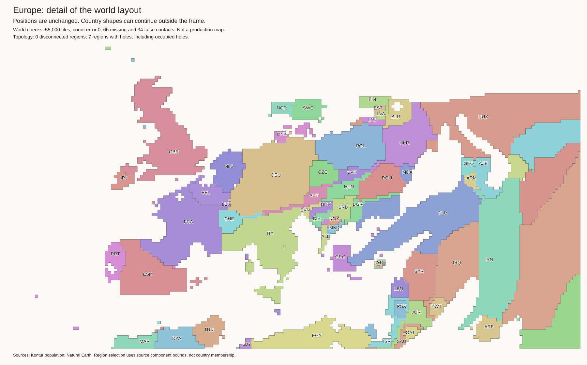

Experimental layouts. Neither candidate is approved. The published map is unchanged.
The widened-water trial restores exterior-water access to Estonia, Latvia, and Lithuania. Paraguay is inland. But Norway and Sweden become detached from the rest of the mainland. Other false coasts remain.
| Measurement | Baseline | Margin 0 | Margin 1 |
|---|---|---|---|
| Tile count error | 0 | 0 | 0 |
| Extra parts in source-connected landmasses | 0 | 4 | 3 |
| Possible lost source coasts | 21 | 22 | 14 |
| Possible false coasts | 7 | 7 | 7 |
| Missing represented contacts | 59 | 61 | 66 |
| False represented contacts | 55 | 46 | 34 |
Source coast checks use finite boundary samples. They do not prove source water connectivity. Real lakes and seas must not be counted as phantom holes.
World · Europe · South America · Japan

World · South America · Japan